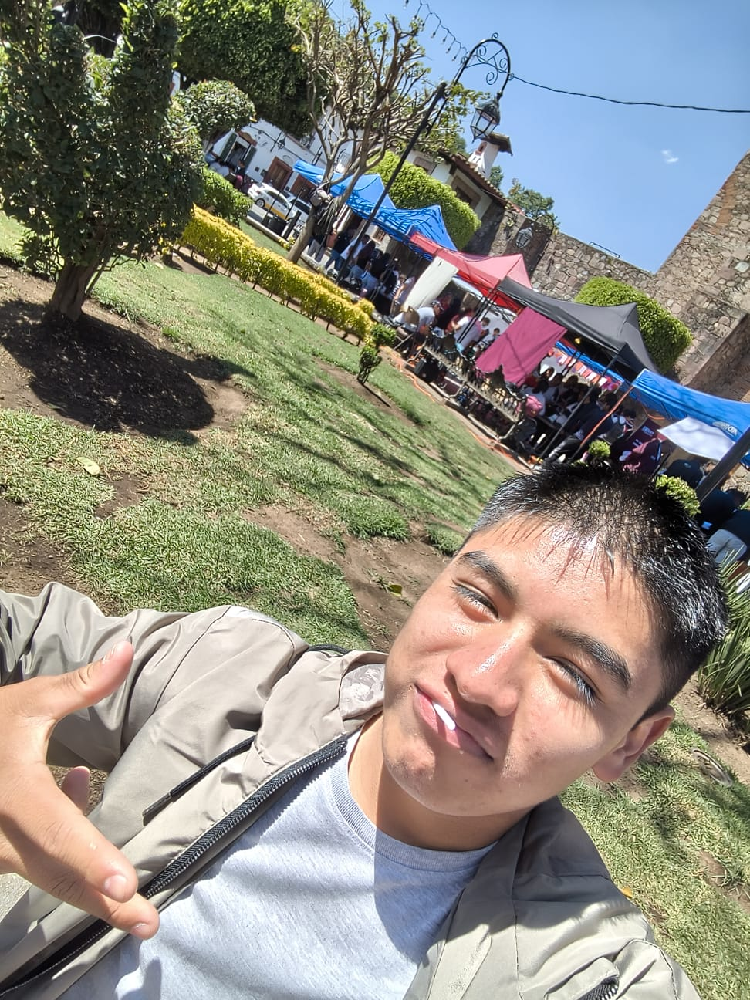

Estudiante | interesado en entregar una página web de calidad
Sobre mí
Soy Lucas Cuitlahuac, estudiante interesado en el desarrollo web y la creación de proyectos digitales. Me gusta aprender nuevas tecnologías y aplicarlas en proyectos que representen ideas culturales y creativas.
Sobre el proyecto
"Raíces de Ocoxal" es un proyecto digital que desarrollé enfocado en la difusión y valoración de las artesanías elaboradas con ocoxal, una fibra natural proveniente de las hojas secas del pino. Este sitio web fue desarrollado con el objetivo de representar visualmente la riqueza cultural de estas piezas artesanales, así como dar a conocer su proceso de elaboración, su significado y su impacto en las comunidades.
El proyecto integra elementos de diseño web como estructura HTML, estilos CSS, uso de imágenes y navegación interactiva, lo cual permitió construir una experiencia visual clara y atractiva para el usuario. Además, fue publicado en internet mediante un servicio de hosting, permitiendo su acceso desde cualquier dispositivo.
Objetivo
El principal objetivo de este proyecto es demostrar mis habilidades en el desarrollo web, así como compartir y valorar la cultura artesanal mexicana mediante una página funcional y atractiva.